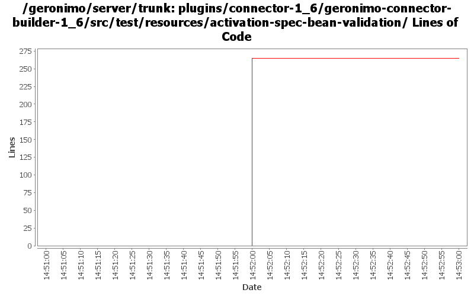

[root]/plugins/connector-1_6/geronimo-connector-builder-1_6/src/test/resources/activation-spec-bean-validation

| Author | Changes | Lines of Code | Lines per Change |
|---|---|---|---|
| rickmcguire | 2 (100.0%) | 265 (100.0%) | 132.5 |
GERONIMO-5230 Add Bean Validation Support to the connector 1.6 implementation.
Some unit tests for the builder support.
265 lines of code changed in 2 files: